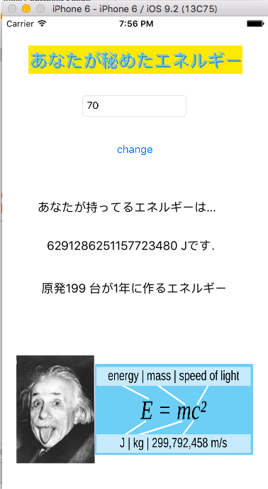

このツイートが原因

30分もたたずに21いいねがきました．
ってことで，できるとは到底思わないけど，1月5日までに21個のクソアプリを生成します．
Swiftとか「勉強いつかしてみたいな？」って数日前から思っていた人の思いつきですので，本当にクソアプリです．温かい目で見てください．
体重を入力すると，アインシュタインの特殊相対性理論を使って，その人が持っているエネルギーを計算してくれるアプリ．原発何基文に相当するかも計算してくれる．詳細

乱数で0〜100が生成されるので，できるだけ少ない回数でテストの点数が点数が何点なのかを当てるゲーム．入力したら，「高いよ，低いよ，あってるよ」ってのを教えてくれる．詳細
ボタンを押すとカウントが上がり，「3の倍数もしくは3の付く数字の時にアホになり，5の倍数もしくは5の付く数字の時に世界のナベアツさんがナルシストになる」というアプリ．詳細
LT用タイマーアプリです．残り時間に応じてぱちおさんが小さくなっていきます．スタート・ストップ・リセットが出来ます．LT終了時に別のぱちおさんの画像が出現します．詳細